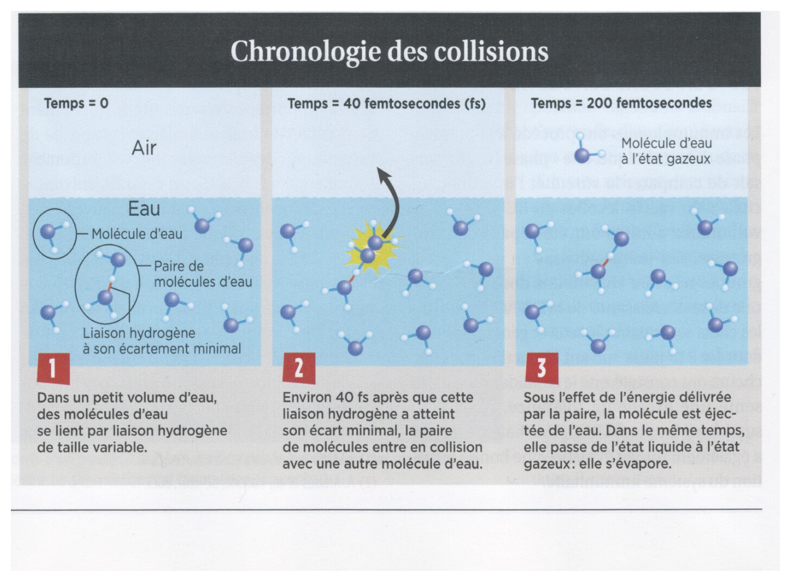

Chimie — Résumé de cours · PCSI · Source : Lycée Janson de Sailly (Paris) · mis au propre le 19/09/2026
Remarque sur la source de ce document
Ce chapitre est construit par le professeur sous forme de « documents » à partir desquels les notions du cours sont dégagées (démarche inductive), plutôt que sous forme d'un cours rédigé classique. Le plan complet annoncé par le professeur comporte trois chapitres (Systèmes physico-chimiques ; La réaction chimique et son avancement ; Évolution et équilibre), mais seuls les quatre documents ci-dessous ont été fournis dans le polycopié source disponible : ils couvrent le chapitre 1 et l'introduction du chapitre 2 (équation de réaction). Les notions de avancement, quotient de réaction, loi de Guldberg et Waage et critère d'évolution, annoncées dans le plan du cours, ne sont pas couvertes par ce document (probablement traitées à l'oral en classe ou dans un support non transmis) — elles ne sont donc pas transcrites ici pour éviter d'attribuer au professeur un contenu qu'il n'a pas lui-même rédigé.
1. Vocabulaire des changements d'état physique
Définition 1
Un corps pur peut exister sous trois états physiques : solide, liquide, gaz. Le passage d'un état à un autre porte un nom spécifique selon le sens de la transformation.
Fig. 1 — Vocabulaire des changements d'état physique (Définition 1).
2. Types d'espèces chimiques
Définition 2
On distingue trois grands types d'espèces chimiques, définies par la nature de leurs entités constitutives à l'échelle microscopique :
Chlorure de sodium NaCl (solide) ; Na+, Cl− (ions) ; Na+(aq) (ion solvaté en solution aqueuse)
Remarque
En solution, la nature du solvant est indiquée entre parenthèses dans la notation de l'espèce physico-chimique (exemple pour l'eau : Na+(aq)).
3. Aspect microscopique de la vaporisation
Remarque — culture scientifique (d'après La Recherche, février 2016)
L'évaporation est un phénomène collectif : des simulations numériques et des expériences de spectroscopie femtoseconde (échelle de $10^{-15}\,\text{s}$) montrent que le départ d'une molécule d'eau de la surface liquide résulte de collisions successives entre molécules voisines, plutôt que d'un simple « saut » individuel indépendant. La molécule qui s'évapore n'est en général pas celle qui a initialement reçu le surcroît d'énergie thermique, mais une molécule voisine ayant hérité de cette énergie via une chaîne de collisions.

Fig. — Document 3, « Chronologie des collisions » (Nagata et al.) : (1) à $t=0$, dans un petit volume d'eau, des molécules s'associent par liaison hydrogène en une paire ; (2) à $t\approx40$ fs, la paire entre en collision avec une troisième molécule d'eau au moment où l'écartement de la liaison hydrogène est minimal ; (3) à $t\approx200$ fs, sous l'effet de l'énergie délivrée par la paire, une molécule est éjectée de l'eau et passe à l'état gazeux : elle s'est évaporée.
4. Équation de réaction et nombres stœchiométriques algébriques
Définition 3 — Réaction chimique et équation de réaction
Une réaction chimique est un phénomène par lequel des espèces physico-chimiques consommées et produites — les réactifs et les produits de la réaction — sont reliées par une équation de réaction, qui traduit la conservation de chaque élément chimique ainsi que la conservation de la charge électrique à travers les nombres stœchiométriques ajustés.
Exemple — réaction d'oxydoréduction en solution aqueuse
$$2\text{Hg}^{2+}_{(aq)} + 2\text{Fe}^{2+}_{(aq)} = \text{Hg}_2^{2+}_{(aq)} + 2\text{Fe}^{3+}_{(aq)}$$
Les différents nombres figurant devant les constituants s'appellent les nombres stœchiométriques. On peut les noter $s_i$ : ici $s_{\text{Hg}^{2+}}=2$, $s_{\text{Fe}^{2+}}=2$, $s_{\text{Hg}_2^{2+}}=1$, $s_{\text{Fe}^{3+}}=2$.
Théorème 1 — Orientation et nombres stœchiométriques algébriques
À une même réaction chimique correspondent deux écritures, selon le sens dans lequel on choisit d'écrire l'équation :
$$2\text{Hg}^{2+} + 2\text{Fe}^{2+} = \text{Hg}_2^{2+} + 2\text{Fe}^{3+} \qquad \text{ou bien} \qquad \text{Hg}_2^{2+} + 2\text{Fe}^{3+} = 2\text{Hg}^{2+} + 2\text{Fe}^{2+}$$
Ainsi, on définit un nombre stœchiométrique algébrique $\nu_i$ (« nu i »), positif ou négatif selon le sens choisi pour l'équation :
si l'espèce $A_i$ figure à droite de l'équation, son nombre stœchiométrique algébrique $\nu_i$ est égal à $s_i$ affecté du signe $+$ ;
si l'espèce $A_i$ figure à gauche de l'équation, son nombre stœchiométrique algébrique $\nu_i$ est égal à $s_i$ affecté du signe $-$.
Ainsi, on peut écrire l'équation générale de la réaction chimique quelconque sous la forme :
$$0 = \sum_i \nu_i A_i$$
avec $\nu_i \in \mathbb{Q}$ les nombres stœchiométriques algébriques, et $A_i$ les espèces physico-chimiques.
Remarques importantes
Les espèces sont a priori écrites à droite ou à gauche selon un choix arbitraire : la simple écriture de l'équation ne permet pas de savoir dans quel sens aura effectivement lieu la transformation ; cela dépendra en fait de l'état du système (voir le critère d'évolution, pour l'instant non traité dans ce document).
Toutefois, la plupart du temps, on se place dans des conditions initiales telles que la transformation modélisée se déroule bien dans le sens indiqué. Par exemple, si on mélange une solution contenant des ions Fe$^{2+}_{(aq)}$ avec une solution contenant des ions Hg$^{2+}_{(aq)}$, alors sans présence initiale de Hg$_2^{2+}$ ni de Fe$^{3+}$, les premiers sont appelés les réactifs, les seconds les produits.
Remarque — unicité de l'écriture
On s'assurera toujours que la même espèce physico-chimique $A_i$ n'apparaisse jamais plusieurs fois dans une même équation. Par exemple, l'équation $\text{N}_2\text{O}_{4(g)}=2\text{NO}_{2(g)}+\frac12\text{O}_{2(g)}$ n'est pas correcte, car il faut nécessairement simplifier pour que $\text{O}_{2(g)}$ n'apparaisse qu'une seule fois : $\text{N}_2\text{O}_{4(g)}=2\text{NO}_{2(g)}+\frac12\text{O}_{2(g)}$ (bien vérifier après simplification qu'aucune espèce n'apparaît de part et d'autre). De même, on ne modélise pas la dissolution du chlorure de sodium par $\text{NaCl}_{(s)}+\text{H}_2\text{O}_{(l)}\to\text{Na}^+_{(aq)}+\text{Cl}^-_{(aq)}+\text{H}_2\text{O}_{(l)}$, mais par $\text{NaCl}_{(s)}\to\text{Na}^+_{(aq)}+\text{Cl}^-_{(aq)}$, car il convient de lui attribuer le nombre stœchiométrique $\nu_i=0$ lorsqu'une espèce n'intervient pas réellement dans la transformation (ici l'eau, simple solvant).
Quiz de fin de chapitre
1. Nommer le changement d'état d'un solide vers un gaz, et celui d'un gaz vers un solide (Définition 1).
Réponse
Solide → gaz : sublimation. Gaz → solide : condensation (Fig. 1).
2. Donner un exemple d'espèce chimique atomique, un exemple moléculaire et un exemple ionique (Définition 2).
Réponse
Atomique : le fer Fe (métal simple). Moléculaire : l'eau H$_2$O. Ionique : le chlorure de sodium NaCl (solide ionique), ou les ions Na$^+$ et Cl$^-$ pris séparément.
3. Écrire les nombres stœchiométriques algébriques $\nu_i$ de chaque espèce dans l'équation $2\text{Hg}^{2+}+2\text{Fe}^{2+}=\text{Hg}_2^{2+}+2\text{Fe}^{3+}$ (Théorème 1).
4. On écrit l'équation dans l'autre sens : $\text{Hg}_2^{2+}+2\text{Fe}^{3+}=2\text{Hg}^{2+}+2\text{Fe}^{2+}$. Donner les nouveaux nombres stœchiométriques algébriques.
Réponse
Tous les signes s'inversent (Théorème 1) : $\nu_{\text{Hg}_2^{2+}}=-1$ ; $\nu_{\text{Fe}^{3+}}=-2$ ; $\nu_{\text{Hg}^{2+}}=+2$ ; $\nu_{\text{Fe}^{2+}}=+2$.
5. Pourquoi ne modélise-t-on pas la dissolution du chlorure de sodium en écrivant explicitement l'eau comme réactif et produit (Remarque du §4) ?
Réponse
Parce que l'eau n'intervient pas réellement dans la transformation chimique : elle est seulement le solvant qui permet la dissolution, sa quantité ne varie pas au cours de la réaction. Il faut donc lui attribuer un nombre stœchiométrique algébrique nul ($\nu_{\text{H}_2\text{O}}=0$), ce qui revient à ne pas l'écrire dans l'équation.
6. Que se passerait-il si l'on écrivait l'équation $\text{N}_2\text{O}_4=2\text{NO}_2+\frac12\text{O}_2$ sans remarquer que O$_2$ pourrait apparaître de façon incohérente dans un bilan plus complexe (Remarque du §4) ?
Réponse
Il faut vérifier qu'une même espèce physico-chimique n'apparaît jamais deux fois dans la même équation (une fois simplifiée) : si une espèce apparaissait à la fois à gauche et à droite sans simplification, l'équation ne serait pas correctement écrite et donnerait un bilan de matière erroné lors de son exploitation quantitative.
7. Piège classique : le sens dans lequel on choisit d'écrire une équation de réaction (Théorème 1) déterminé-t-il le sens réel dans lequel la transformation va se produire ?
Réponse
Non — comme le précise la Remarque du §4, l'écriture de l'équation est un choix arbitraire d'orientation ; le sens réel de l'évolution du système dépend de l'état initial du système (comparaison entre quotient de réaction et constante d'équilibre, notion non couverte dans ce document) et non de la façon dont on a choisi d'écrire l'équation sur le papier.
8. Piège classique : les nombres stœchiométriques usuels $s_i$ (toujours positifs) et les nombres stœchiométriques algébriques $\nu_i$ (positifs ou négatifs) désignent-ils la même chose ?
Réponse
Ce sont deux notations liées mais distinctes (Théorème 1) : $s_i$ est toujours positif et ne renseigne pas sur le côté (gauche/droite) où se trouve l'espèce, alors que $\nu_i=\pm s_i$ encode en plus, par son signe, si l'espèce est un réactif ($\nu_i<0$) ou un produit ($\nu_i>0$) dans l'écriture choisie de l'équation.
9. Synthèse : reliez la Définition 2 (types d'espèces chimiques) à l'exemple du §4 (Hg$^{2+}$, Fe$^{2+}$, etc.) pour identifier le type d'espèces mis en jeu dans cette réaction, et expliquer pourquoi l'indice « (aq) » est important.
Réponse
Toutes les espèces de cette réaction (Hg$^{2+}$, Fe$^{2+}$, Hg$_2^{2+}$, Fe$^{3+}$) sont des espèces ioniques en solution (Définition 2) : ce sont des cations solvatés. L'indice « (aq) » précise que le solvant est l'eau (Remarque du §2) — une information indispensable, car les propriétés (réactivité, stabilité) d'un ion peuvent différer selon le solvant dans lequel il est dissous.
10. Synthèse : à partir du Théorème 1 (écriture générale $0=\sum_i\nu_iA_i$), expliquer pourquoi cette écriture unique permet de traiter de façon symétrique les réactifs et les produits dans les calculs de bilan de matière (avancement de réaction), même si cette notion n'est pas encore formellement introduite dans ce document.
Réponse
En écrivant $0=\sum_i\nu_iA_i$ avec des nombres stœchiométriques algébriques (positifs pour les produits, négatifs pour les réactifs), la variation de la quantité de matière de chaque espèce au cours de la réaction s'exprime de façon uniforme comme proportionnelle à $\nu_i$ (via un unique paramètre d'avancement, commun à toutes les espèces) : les réactifs voient leur quantité diminuer ($\nu_i<0$) et les produits voir leur quantité augmenter ($\nu_i>0$), sans qu'il soit nécessaire d'écrire deux formules de bilan différentes selon qu'on parle d'un réactif ou d'un produit — c'est cette symétrie algébrique qui rend l'écriture par nombres stœchiométriques algébriques particulièrement pratique pour les bilans de matière quantitatifs.
Sources
Document source : « Transformations chimiques — Approche thermodynamique », Chapitre 1 et introduction du Chapitre 2 (résumé de cours, Lycée Janson de Sailly, Paris)
Programme officiel de Chimie, CPGE 1re année (filière PCSI), bloc « I. Transformation de la matière » (arrêté du 5 janvier 2021) : enseignementsup-recherche.gouv.fr